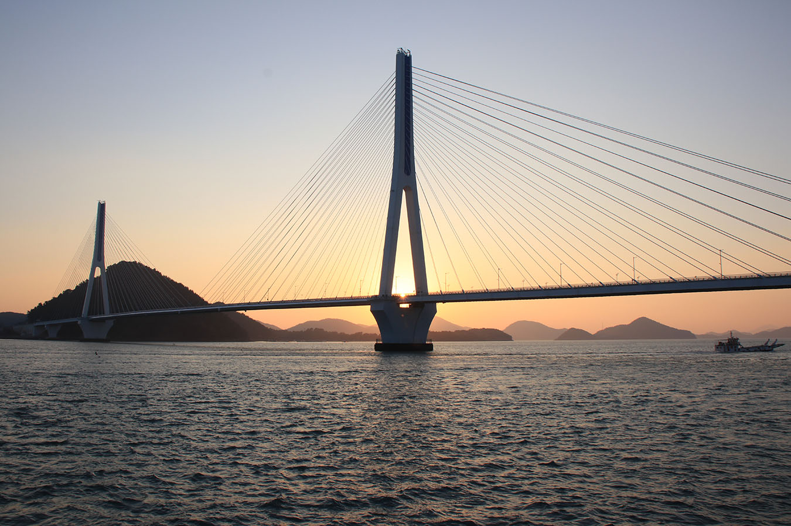
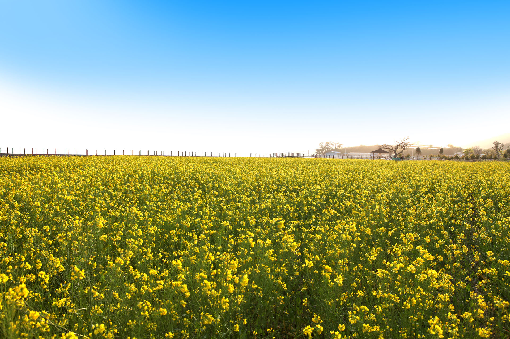
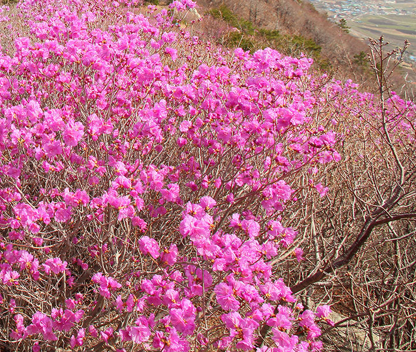

" 한려수도의 기점을 이루는 푸르고 막은 바다 여수 "
예로부터 농경과 어로가 발달한 양향이었으며, 임진왜란을 극복한 이 충무공과 그를 따르던 선열들의 얼이 듬뿍 담겨진 호국충절의 고장이다.
사진을 찍어 멋진여수를 모두에게 보여주기
여수사진 콘테스트








버스를 타고 편안하게 여수한바퀴
여수낭만버스
제 1 코스
제 2 코스
토요유적코스
야경코스
주간코스
야간코스
- 엑스포역
- 오동도
- 진남관
- 해양수산과학관
- 향일암
- 여수수산시장
- 엑스포역
- 엑스포역
- 향일암
- 이순신광장
- 흥국사
- 이순시대교 홍보관
- 서시장(승,하차)
- 여수특화물수산시장(정차)
- 엑스포역
- 엑스포역
- 충민사
- 진남관
- 고소대
- 이순시광장
- 전라좌수영거북선
- 선소
- 손양원목사유적공원
- 흥국사
- 수산시장
- 엑스포역
- 엑스포역
- 여수국가산업단지
- 돌산공원
- 돌산갓김치거리
- 이순시광장
- 오동도 야간분수
- 엑스포역
- 엑스포역
- 아쿠아플라넷
- 케이블카 주차타워
- 오동도
- 엠블호텔
- 하멜전시관
- 이순신광장
- 여객선터미널
- 돌산공원입구
- 엑스포역
- 엑스포역
- 돌산공원입구
- 국동어항단지(게장백반거리)
- 예울마루
- 선소
- 서호요트마리나
- 여수시청
- 여문문화의거리
- 교동시장(포차거리)
- 이순신광장
- 엑스포역
소요시간 : 7시간 20분 요금 : 9,000원
소요시간 : 7시간 20분 요금 : 9,000원
소요시간 : 7시간 20분 요금 : 9,000원
소요시간 : 2시간 30분 요금 : 9,000원
소요시간 : 각 승강장별 승.하차 가능 요금 : 5,000원
소요시간 : 각 승강장별 승.하차 가능 요금 : 10,000원